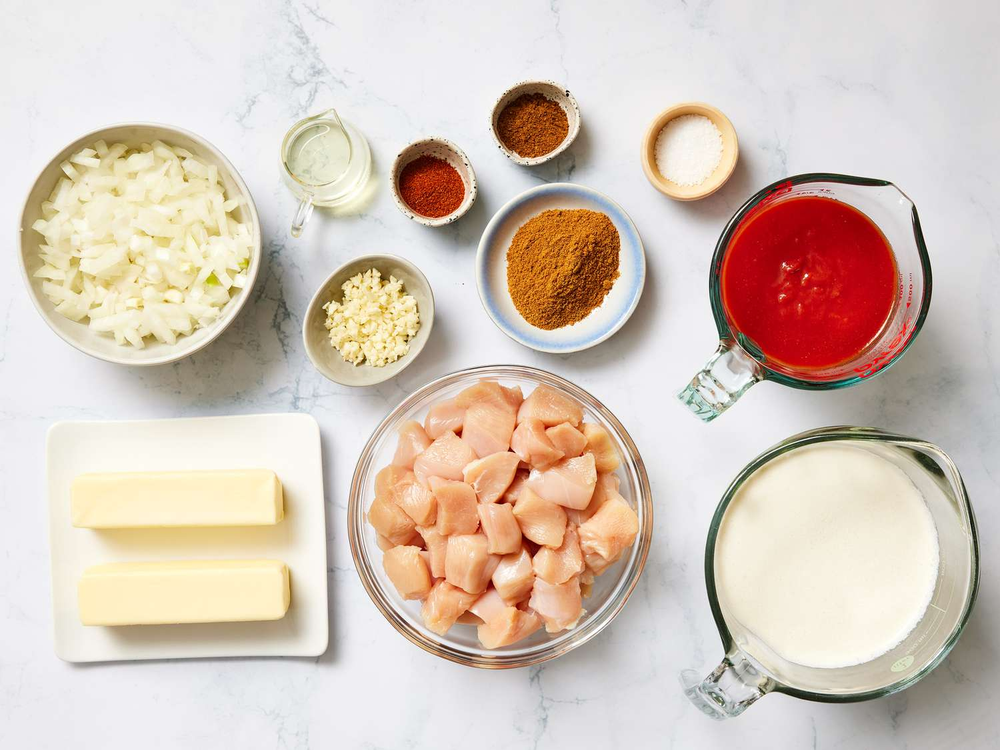

BUTTER CHICKEN

Chicken & Marinade
1.5 to 2 lbs boneless, skinless chicken (thighs or breasts)
1 tbsp grated fresh ginger
1 tsp red chili powder (or paprika)
Butter Sauce (Gravy)
4 to 6 tbsp unsalted butter (divided)
1 large yellow onion, finely diced
15-oz can tomato sauce or puree
1 cup heavy whipping cream
1 tsp Kasuri Methi (dried fenugreek leaves)
Extra garam masala and salt to taste

Marinate:
Combine the chicken with the yogurt, lemon juice, ginger, garlic, and all marinade spices in a large bowl.
Cover and refrigerate for at least 1 hour (ideally 6 to 12 hours).
Brown Chicken:
Heat oil and 1 tbsp of butter in a large skillet over medium-high heat. Sear chicken pieces in batches until browned on all sides (about 3 minutes per side). Remove chicken and set aside; it will finish cooking in the sauce.
Saute Aromatics:
Melt 2 tbsp of butter in the same pan. Add the onions and sauté for 5 minutes until translucent. Stir in any leftover ginger/garlic for 1 minute.
Toast Spices:
Add a pinch more garam masala and cumin to the onions. Stir for 60 seconds until fragrant.
Simmer Sauce:
Pour in the tomato sauce and sugar. Reduce heat to medium-low, cover, and simmer for 10–12 minutes. If you prefer a completely smooth sauce, use an immersion blender at this stage.
Finish and Cream:
Stir in the heavy cream and the remaining butter. Add the browned chicken back into the sauce.
Signature Touch:
Rub the Kasuri Methi between your palms to crush it and sprinkle it over the sauce. Simmer for an additional 5–8 minutes until the chicken is cooked through and the sauce is thick.
Serve:
Garnish with fresh cilantro. Best served with Basmati Rice or Garlic Naan. ENJOY!